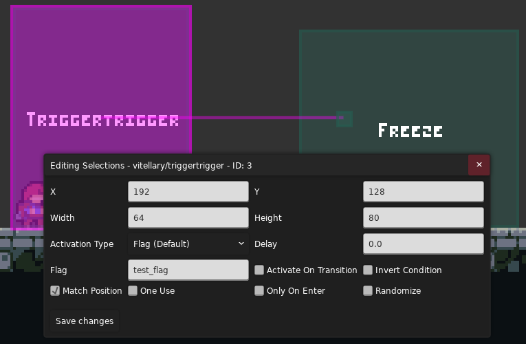

Crystalline Helper
Myn:
宇宙是如何诞生的？是 tt 触发了那个奇点。
万物是如何运动的？是 eevee 框动着世界变化。
参考
Trigger Trigger
虽然标题是 Crystalline Helper, 但讲的是 Trigger Trigger(什
顾名思义, Trigger Trigger(简称 tt) 就是触发 Trigger 的 Trigger
你可以用它来做这些事情
- 当你要在一个地方叠多层 Trigger 时, tt 能够让你更方便地管理这些 Trigger, 所以你经常能看到有的图只放了一个 tt, 然后连了 很多其他 Trigger 在房间外头(像蜘蛛网一样)
- 你可以用 tt 组成一条 tt 链, 搭配 delay 能实现各种效果
- 因为 tt 可以在玩家做出某种行为时触发, 所以可以做神经 gp, 比如每次跳跃在房间里生成一个新浪
- ...
使用

当你满足 ActivationType 时, tt 会在 Delay 秒后按顺序触发节点位置的 Trigger
ActivationType 在选择某些特殊值时会多出几项, 比如当你选择 Activation.CoreMod, 则属性栏会多出 CoreMod 这一项(你需要在保存后叉掉面板再打开, 因为 Loenn 不支持实时更新)
然后讲剩下相对不是很重要的属性
- Activate On Transition: 相当于把当前 tt 撑满房间, 进入房间时就已经在 tt 里了
- Invert Condition: 相当于触发条件变成了 not ActivationType, 原来触发的不触发了, 原来不触发的触发了
- Match Position: 相当于把节点处的 Trigger 移到 tt 位置并对齐大小, 就好像这里原来就放着个 Trigger 一样, 因为有些 Trigger 需要用到 Player 的位置, 比如 BloomFadeTrigger, 所以还是得移回到原位
- One Use: 字面意思, 触发一次就失效
- Only On Enter: 在进入 tt 瞬间判断 ActivationType, 而不是呆在 tt 里时判断
- Randomize: 随机触发一个节点处的 Trigger, 而不是按顺序触发节点处的 Trigger
原理
Trigger Trigger 会在你进入房间时将节点所在位置的一个 Trigger 纳入它的管理范围, 同时关闭其碰撞, 如果节点盖到两个 Trigger, 先放的先被处理, 如果节点没盖到 Trigger, 则遍历房间找个最近的 Trigger(距离 Trigger 左上角)
同时 Trigger Trigger 并不会记录哪个 Trigger 在管理范围内, 所以哪怕你弄两个节点放一个 Trigger 上 或者一个在外面, 一个离得近, 也会触发两次, 所以保险起见都是一个 Trigger 一个节点
Trigger
所谓 Trigger, 就是游戏中的一个隐藏矩形区域, 当玩家进入这个区域时会触发一些事件, 比如播放钢管落地音效, 触发一段对话, 或者让你的游戏暂停 10 秒, 这被称为 OnEnter(这里的 On 相当于 when)), 当玩家呆在这块区域时, Trigger 也会做些事,
比如根据玩家在水平从左到右方向位置比例来设置光效强度, 声音响度等, 这被称为 OnStay, 当玩家离开这个区域时, Trigger 做的事主要是些清理工作, 大家平时并不会太注意到, 比如你 只有在 Trigger 范围内才能跳 这个 gp, 就需要玩家在离开 Trigger 后禁用跳跃,
这被称为 OnExit 或者 OnLeave
所以在你使用 tt 时要注意节点处 Trigger 主要的触发方式是什么, 是 OnEnter, OnStay, 还是 OnLeave? 以防出现 tt 失效的情况, 即使如此, 大部分时候你完全可以把 tt 想象成节点处的 trigger, 因为 tt 就是这么符合直觉!
坑
当你的 ActivationType 为下面三个时, Activate On Transition 会自动打开(一开始科研的时候被坑了, 我还纳闷 Bloom Trigger 怎么生效不了, 结果是生效了但是由于房间太大看着不明显, 虽然当时如果看 Mapping Utils 肯定一眼看出来了())
- ActivationTypes.OnHoldableEnter
- ActivationTypes.OnInteraction
- ActivationTypes.OnEntityEnter